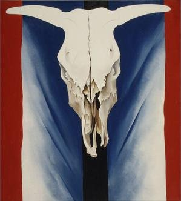

Cow's Skull: Red, White, and Blue
Georgia O'Keeffe · 1931 · Oil on canvas · 101.3 × 91.1 cm · The Metropolitan Museum of Art, New York
In copyright. Look and learn: shown for study, not for download.
O'Keeffe began spending part of each year in New Mexico in 1929, collecting rocks and bones from the desert floor and driving herself around in a Ford Model A she bought and learned to drive that year. She returned to New York each winter to show at Alfred Stieglitz's gallery; she had married him in 1924. She painted this skull in 1931, at forty-three. It came to the Metropolitan Museum in 1952 as part of the Alfred Stieglitz Collection.